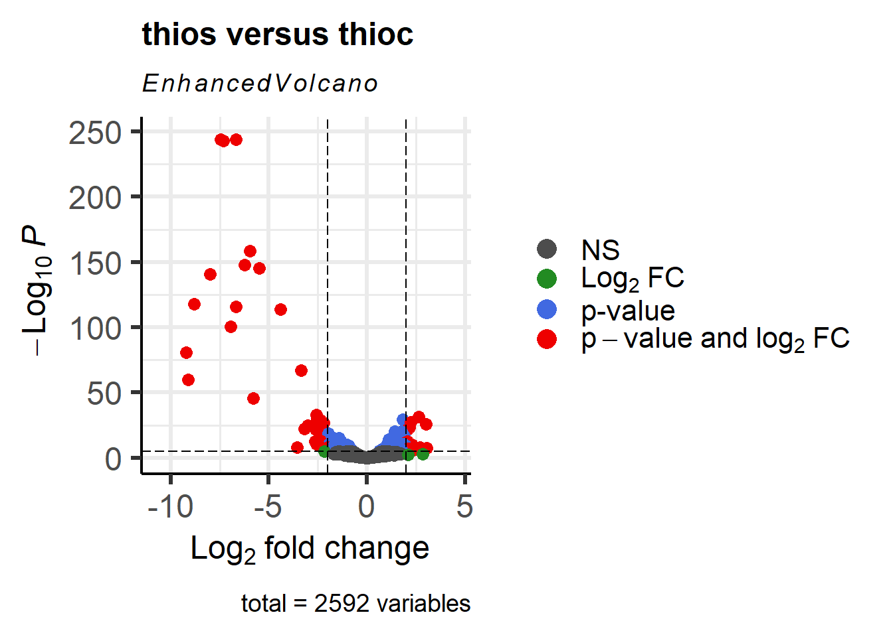

library("tidyverse")
library("DESeq2")
library("apeglm")
library("pheatmap")
library("ggrepel")
library("RColorBrewer")
library("EnhancedVolcano")DeSeq2
The DESeq2 package provides methods to test for differential expression in RNA-seq data by use of negative binomial generalized linear models; the estimates of dispersion and logarithmic fold changes incorporate data-driven prior distributions (Love, Huber, and Anders 2014).
In this workflow we look for differentially expressed genes among 6 RNA-seq single-read sequencing libraries that were collected from from 2 growth treatments: Thioalkalivibrio thiocyanoxidans grown on thiocyanate and thiosulfate (3 replicates each). To generate a count table, the sequence reads were first processed with FastP and Sortmerna and the remaining reads mapped against the T. thiocyanoxidans genome using Bowtie2. Afterwards, count tables were generated using FeatureCounts. Here, we will analyse these count tables using DeSeq2.
A Gbk file as well as annotations were downloaded from NCBI in order to have annotations for each gene available.
On those pages you will find information about how to:
- Read the data into R and prepare the count table to be used in DeSeq2
- Investigate the count tables and look at the quality of the different replicates
- Run DeSeq2 to identify differentially expressed genes
- Generate summary tables
- Generate visuals
If you want to follow this code on your own, feel free to download the required files from here
Load libraries
The exact versions used to write this workflow are:
- R version 4.2.2
- DESeq2_1.38.3
- apeglm_1.20.0
- tidyverse_2.0.0
- EnhancedVolcano_1.16.0 (just for visuals, not essential)
- RColorBrewer_1.1-3 (just for visuals, not essential)
- ggrepel_0.9.5 (just for visuals, not essential)
- pheatmap_1.0.12 (just for visuals, not essential)
Load data
The data we work with are:
- The count table generated with FeatureCounts
- A mapping file linking the sample IDs with the treatment conditions
- A gene annotation table
count_table <- read.csv("../../data/metatranscriptomics/counts.txt", header = TRUE, sep = "\t", row.names = 1)
metadata_table <- read.csv("../../data/metatranscriptomics/mapping.txt", header = TRUE, sep = "\t", row.names = 1)
annotation_table <- read.csv("../../data/metatranscriptomics/ncbi_dataset.tsv", header = TRUE, sep = "\t")Notice:
- To be able to use DeSeq2, the counts in the table should not be normalized
- DeSeq2 will correct for library size and therefore you do not need to correct values yourself
- The columns of the count matrix and the rows of the metadata table should be in the same order (we will check if that is the case in the step below)
- Our final count_table will have the geneIDs as row.names, which is why we use
row.names=1and other than the count information should have no other columns. Since FeatureCounts provides colums with some other information, such as the gene length, we perform some cleaning steps in the code below and you might need to adjust your own data depending on whether or not you have any other columns other than the counts
Prepare data
Here we will:
- Ensure that our annotation table has as many rows (i.e. genes) as our count data table
- Create a minimal metadata file for plotting
- Ensure that our count table only has the count data as columns and not any other information. I.e. we want the row names be our gene IDs and the columns be the count data for each sample
- We want to ensure that the columns in our count data is in the same order as in the metadata file. If this is not the case then we will fix this
#subset the gtf table from ncbi to ensure that we work with the same number of genes
#adjust this depending on where your annotations come from
annotation_table <- annotation_table |>
filter(Gene.Type %in% c("protein-coding", "pseudogene"))
# Subsetting the dataframe based on the "treatment" column to create a minimal metadata file
subset_metadata <- metadata_table[, c("treatment"), drop = FALSE]
#remove unneccessary columns from the count table
#adjust this step if you work with a different count table
#the goal is to have the rownames be the gene names and the columns only contain the count data from our sequencing libraries
count_table <-
count_table |>
select(!(Chr:Length))
#ensure that the sampleIDs in the count data are the same as in the metadata
all(rownames(metadata_table) %in% colnames(count_table))[1] TRUE#ensure that names between the count and metadata tables are in the same order
all(rownames(metadata_table) == colnames(count_table))[1] FALSE#reorder data if the tables above are not in the same order
count_table <- count_table[, rownames(metadata_table)]
#confirm that this worked
all(rownames(metadata_table) == colnames(count_table))[1] TRUE#convert count data to long format
count_table_long <- gather(count_table, key = "Sample", value = "RawCount")Explore raw data
Exploring the count table first is important to find any potential issues with the data, for example spot replicates that behave unexpectedly.
Generate histograms
ggplot(count_table_long) +
geom_histogram(aes(x = RawCount), stat = "bin", bins = 200) +
xlab("Raw expression counts") +
ylab("Number of genes") +
facet_wrap(~Sample, scales = "free")In this plot, we see some common features of RNA-seq count data:
- our data will not have a fixed range, i.e. some samples have have a range rom 0 - 150 000 counts, others have more counts
- our data is not normal distributed:
- a low number of counts associated with a large proportion of genes
- a long right tail due to the lack of any upper limit for expression
- a large dynamic range
This tells us that our RNA-seq data is not normally distributed, which is quite normal for this kind of data. Statistical models used in down-stream analyses need to take these characteristics into account (DeSeq2 does this for us in order to make predictions (i.e. model) about our data.
If we can not use a normal distribution to model our data, then we could work with a Poisson distribution instead. Poisson can be used for data where the number of cases are large and the probability of an event happening is low. Since in RNA-Seq data, we have millions of reads being sequences, the probability of a read mapping to a gene is low.
However, we first have to test whether our data fulfills the criteria to use the Poisson distribution. Poisson has only one parameter, lamba, and Poisson expects that lamba = mean = variance. We can easily check if that is true for our data.
Plot the mean vs variance
- Mean: average of a given set of data, the mean across all the samples for each individual gene
- Variance: average of the squared differences from the mean, it therefore measures the spread of a data set.
Comparing these two values tells us more about the assumptions we can make about our data, specifically if the mean == variance we could model our data using a poisson distribution.
#The second argument '1' of 'apply' function indicates the function being applied to rows. Use '2' if applied to columns
mean_counts <- apply(count_table[,4:6], 1, mean)
variance_counts <- apply(count_table[,4:6], 1, var)
df <- data.frame(mean_counts, variance_counts)
ggplot(df) +
geom_point(aes(x=mean_counts, y=variance_counts)) +
scale_y_log10(limits = c(1,1e9)) +
scale_x_log10(limits = c(1,1e9)) +
geom_abline(intercept = 0, slope = 1, color="red")We see:
- that the mean is not equal to the variance since data points do not fall on the diagonal
- that for the genes with high mean expression, the variance across replicates tends to be greater than the mean, since the points fall above the red line. So variance > mean
- for the genes with low mean expression we see more scattering, i.e.“heteroscedasticity”. This tells us that lowly expressed genes show a lot of variability in the variance values
All of this tells us that RNA-Seq data does not fit the criteria if we wanted to model the count data with a Poisson distribution (where mean == variance). If we would increase the samples (>20) we might be able to use Poisson, however, a large number of replicates can be either hard to obtain (depending on how samples are obtained) and/or may not be affordable.
- The distribution that fits RNA-seq data best, given this type of variability between replicates, is the negative binomial, which can be used for data where the mean < variance. DeSeq2 is one tool that allows us to do this.
- The negative binomial has two parameters,
- the fitted mean, which is composed of the sample specific size factor and the expected true concentration of fragments for each sample
- the dispersion parameter (which accounts for the extra variability for lowly expressed genes).
- Notice, that if you work with a lot of samples, DeSeq2 might perform poorly because the data does not work well anymore with the negative binomial distribution. For such cases, a Wilcoxon rank-sum test can be used. A sample size > 8 has been shown to be useful for switching to Wilcoxon. For more information (and a code example) go here. Notice , the example uses edgeR but we can easily use the DeSeq normalized count table we extract below.
Generate a DESEQDataSet object
The R function DESeqDataSetFromMatrix is used to store our count table and metadata in a DESeqDataSet object. Additionally, we provide a formula which specifies the design of our experiment, in our case we want to compare thiocyanate versus thiosulfate treatments. Information about these treatments we find in the treatment column in our metadata_table.
#construct a DESEQDataSet Object
dds <- DESeqDataSetFromMatrix(countData = count_table,
colData = metadata_table,
design = ~treatment,
tidy = FALSE)
#view the structure of this new object
ddsclass: DESeqDataSet
dim: 2606 6
metadata(1): version
assays(1): counts
rownames(2606): G372_RS0100005 G372_RS0100015 ... G372_RS0113390
G372_RS0113395
rowData names(0):
colnames(6): SRR6344906 SRR6344904 ... SRR6344913 SRR6344910
colData names(3): srx_id treatment description#you can view the original data with the counts function
head(counts(dds)) SRR6344906 SRR6344904 SRR6344905 SRR6344912 SRR6344913
G372_RS0100005 365 369 384 196 132
G372_RS0100015 549 636 1428 220 106
G372_RS13400 408 515 910 5338 479
G372_RS0100025 733 759 626 341 504
G372_RS0100030 222 165 148 66 109
G372_RS0100040 1443 1674 1967 1614 786
SRR6344910
G372_RS0100005 221
G372_RS0100015 162
G372_RS13400 2702
G372_RS0100025 474
G372_RS0100030 127
G372_RS0100040 1435Data inputs
There are different ways to read in count data depending on how such tables were generated. In our example we read in a simple count matrix. There are some other import options as well:
- If you have performed transcript quantification (with Salmon, kallisto, RSEM, etc.) you could import the data with tximport, which produces a list, and then you can use
DESeqDataSetFromTximport(). - If you imported quantification data with tximeta, which produces a SummarizedExperiment with additional metadata, you can then use
DESeqDataSet(). - If you have htseq-count files, you can use
DESeqDataSetFromHTSeq().
The design argument
- The design formula, i.e.
design = ~treatmentin the code above, expresses the values we want to use for modeling and is written as a tilde followed by the variables (with plus signs in between them if we work with multiple variables). In our example, we want to investigate the data based on the treatment column. If we work with multiple variables we should put the variable of interest at the end of the formula and put the control variable as the first level. - Prior to performing the differential expression analysis, it is a good idea to know what sources of variation are present in your data. If you know major sources of variation, you can remove them prior to analysis or control for them in the statistical model by including them in the design formula
- If you want to examine the expression differences between treatments, and you know that major sources of variation include, for example, day and age, then your design formula would be
design = ~ day + age + treatment - The factors included in the design formula need to match the column names in the metadata. It is best practice to list the variable that is your main effect in the last position of your design formula.
- We can explore interactions or ‘the difference of differences’ by specifying for it in the design formula. For example, if you wanted to explore the effect of age on the treatment effect, you could specify for it in the design formula as follows:
design = ~ day + age + treatment + age:treatment
Pre-filter data
While it is not necessary to pre-filter low count genes before running the DESeq2 functions, it can be useful to do:
- by removing rows with few reads, we reduce the memory size of the dds data object, and increase the speed of count modeling within DESeq2
- This can also improve visualizations, as features with no information for differential expression are not plotted in dispersion plots or MA-plots
Here, we perform pre-filtering to keep only rows that have a count of at least 5 for a minimal number of samples. A recommendation for the minimal number of samples is to specify the smallest group size, e.g. here there are 3 treated samples.
One can also omit this step entirely and just rely on the independent filtering procedures available in the results() function (see below).
smallestGroupSize <- 3
keep <- rowSums(counts(dds) >= 5) >= smallestGroupSize
dds <- dds[keep,]
ddsclass: DESeqDataSet
dim: 2592 6
metadata(1): version
assays(1): counts
rownames(2592): G372_RS0100005 G372_RS0100015 ... G372_RS0113390
G372_RS0113395
rowData names(0):
colnames(6): SRR6344906 SRR6344904 ... SRR6344913 SRR6344910
colData names(3): srx_id treatment descriptionWhen viewing our dds object, we should see that we have less rows in the dim category, since some genes will have been removed during this step.
Organize factor levels
By default, R will choose a reference level for factors based on alphabetical order. If you don’t tell DESeq2, which level you want to compare against (e.g. which level represents the control group), the comparisons will be based on the alphabetical order of the levels. There are two solutions:
- you can either explicitly tell
resultswhich comparison to make using the contrast argument (this will be shown later) - you can explicitly set the factors levels. In order to see the change of reference levels reflected in the results
Below, we manually will sort the factors and ensure that we compare thiosulfate versus thiocyanate (our reference level), i.e. the last factor is our factor of interest.
dds$treatment <- relevel(dds$treatment, ref = "thiocyanate")
dds$treatment[1] thiosulfate thiosulfate thiosulfate thiocyanate thiocyanate thiocyanate
Levels: thiocyanate thiosulfateQuality assessment of DSEq data
Next, let’s assess the quality of our sequencing data by visualizing the amount of variation across replicates.
To stabilize the variance across the mean DeSeq2 has two methods:
- the variance stabilizing transformation (VST) for negative binomial data with a dispersion-mean trend implemented in the vst function
- the regularized-logarithm transformation implemented in the rlog function
- rlog tends to work well on small datasets (n < 30), potentially outperforming the VST when there is a wide range of sequencing depth across samples (an order of magnitude difference).
- vst should be used for medium-to-large datasets (n > 30)
blind: whether to blind the transformation to the experimental design.blind=TRUEshould be used for comparing samples in an manner unbiased by prior information on samples, for example to perform sample quality assuranceblind=FALSEshould be used for transforming data for downstream analysis, where the full use of the design information should be made. blind=FALSE will skip re-estimation of the dispersion trend, if this has already been calculated. If many of genes have large differences in counts due to the experimental design, it is important to set blind=FALSE for downstream analysis.
### Transform counts for data visualization
#we use blind=TRUE because we first want to do some quality controls
rld <- rlog(dds, blind=TRUE)
vsd <- vst(dds, blind=TRUE) In the down-stream analyses we will work with rld data, since we work with few samples only.
PCA
The plotPCA function is part of DeSeq2 and let’s us check whether our replicates cluster together.
### Plot PCA
plotPCA(rld, intgroup="treatment")By default plotPCA() uses the top 500 most variable genes. You can change this by adding the ntop= argument and specifying how many of the genes you want the function to consider.
We can also use ggplot to better modify the graph:
pcaData <- plotPCA(rld, intgroup="treatment", returnData = TRUE)
percentVar <- round(100 * attr(pcaData, "percentVar"))
ggplot(pcaData, aes(x = PC1, y = PC2, color = treatment)) +
geom_point(size =3) +
xlab(paste0("PC1: ", percentVar[1], "% variance")) +
ylab(paste0("PC2: ", percentVar[2], "% variance")) +
coord_fixed() +
ggtitle("PCA with rlog data")We see that our samples cluster by replicate and we do not see any clear outliers that we would need to take care of.
Hierarchical clustering
We can also compute pairwise correlations for our samples as follows:
### Extract the rlog matrix from the object
rld_mat <- assay(rld)
### Compute pairwise correlation values
rld_cor <- cor(rld_mat)
### Plot heatmap using the correlation matrix and the metadata object
heat.colors <- brewer.pal(6, "Blues")
pheatmap(rld_cor, annotation = subset_metadata,
color = heat.colors)Overall, we observe pretty high correlations ( > 0.97) suggesting no outlying sample(s). Also, similar to the PCA plot you see the samples clustering together by treatment. Since the majority of genes will not be differentially expressed, samples generally have high correlations with each other (values higher than 0.80). Samples below 0.80 may indicate an outlier in your data and/or sample contamination.
Run DeSeq
Next, we use the DESeq function to identify differentially expressed (DE) genes as follows:
dds <- DESeq(dds)estimating size factorsestimating dispersionsgene-wise dispersion estimatesmean-dispersion relationshipfinal dispersion estimatesfitting model and testing#check if level is set correctly
resultsNames(dds)[1] "Intercept"
[2] "treatment_thiosulfate_vs_thiocyanate"#perform normalization post Deseq
### Transform counts for data visualization
rld_downstream <- rlog(dds, blind=FALSE)
vsd_downstream <- vst(dds, blind=FALSE) Note about technical replicates
If you have technical replicates, DeSeq2 comes with a function to collapse these before running DESeq.
DESeq2 does the following:
- it calculates the relative library depth of each sample to estimate a size factor
- it estimates the dispersion of counts for each gene
- it fits a curve to the gene-wide dispersion estimates
- it shrinks gene-wise dispersion estimates
- it uses a generalized linear model (GLM) of the NB family to fit the data
- it estimates coefficients for each sample group along with their standard error. The coefficents are the estimated for the log2 foldchanges, and will be used as input for hypothesis testing
- it uses the nbinomWaldTest to calculate the significance of coefficients in a Negative Binomial GLM using the size and dispersion outputs
Details on size factor estimation
There are multiple biases we need to account for with our data: library size, genes length, RNA population composition for each condition and genes GC composition. We can discard differences with gene length and GC composition if we ompare genes among conditions only.
- Library size: the total number of reads is not always equivalent between samples
- Compositional bias: Our counts are not absolute values butdescribed as proportions or probabilities. Also have a look at Fig1 for a visual example.
To account for this, DeSeq2 calculates a size factor for each sample in the counts matrix via the median ratios method. This size factor is used to normalize the counts.
Details on estimating dispersion
- This step is done to account for variability between replicates
- Dispersion is a measure of spread/variability in the data
- The higher the dispersion, the higher the variability is, i.e.a dispersion of 0.01 == 10% of variability between samples
- We have seen in the plot above that low mean counts have much larger variance in the data and therefore the dispersion estimates will differ more between genes with small means
- If we have a small number of replicates, 3-7, calculation of dispersion is not as reliable but DeSeq2 tries to solve this problem by looking at variability across eachg ene. I.e. DESeq2 assumes that genes with similar expression levels should have similar dispersion.
- DeSeq2 does the following:
- Get dispersion estimates for each gene
- Fit a curve to the gene-wise dispersion estimates
- Shrink the gene-wise dispersion estimates towards values predicted by the curve
We can explore the behavior of each gene across these steps as follows:
#view dispersion plot
plotDispEsts(dds)Here, black dot in the plot represents the dispersion for one gene. The red line is fit to the data, then the dispersions are squeezed toward the red line, resulting in the final (blue) dispersion estimates. Usually, the dispersion is highest at the low counts and levels off at higher counts. Notice that some genes will not be shrunk towards the curve (black dots, with a blue circle) because the variability is so high that DeSeq will not assume that these genes will follow the models assumptions.
This is a good plot to examine to ensure your data is a good fit for the DESeq2 model. Evaluate the plot to see if:
- The data to generally scatter around the curve, with the dispersion decreasing with increasing mean expression levels.
- How much shrinkage you get across the whole range of means in your data. For any experiment with low degrees of freedom, you will expect to see more shrinkage.
- The data scatter in a cloud or different shapes. If that is the case then you might want to explore your data more to see if you have contamination (mitochondrial, etc.) or outlier samples.
- If you do not see a good fit, you can consider exploring other methods, such as EdgeR or limma.
Details on fitting the linear model:
- DeSeq2 will fit a generalized linear model for each gene
- It will model the counts using a negative binominal distribution
- It will calculate the log2-fold differences between our treatments that we provide in the design argument in the DeSeq formula when using
DESeqDataSetFromMatrix
Details on the hypothesis testing:
- The first step is to set up a null hypothesis for each gene. DeSeq2’s null hypothesis is that there is no differential expression across the two sample groups (i.e. the log-fold change (LFC) == 0)
- In DESeq2, the Wald test is the default test used for hypothesis testing when comparing two groups. The Wald test only estimates one model per gene and evaluates the null hypothesis that LFC == 0.
- DESeq2 also offers the Likelihood Ratio Test (LRT) as an alternative hypothesis test for when we are comparing more than two sample classes. Rather than evaluating whether a gene’s expression is up- or down-regulated in one class compared to another, the LRT identifies genes that are changing in expression in any direction across the different sample classes.
Details about p-values:
- For a gene with a significance cut-off of p < 0.05, this means there is a 5% chance it is a false positive. If we test 20,000 genes for differential expression, at p < 0.05 we would expect to find 1,000 genes by chance.
- Each p-value is the result of a single test (single gene). The more genes we test, the more we inflate the false positive rate. We can correct the p-value for multiple testing. The most common approaches are:
- Bonferroni: The adjusted p-value is calculated by: p-value * m (m = total number of tests). This is a very conservative approach with a high probability of false negatives and is generally recommended.
- FDR/Benjamini-Hochberg: The False Discovery Rate (FDR) is an algorithm to control the expected FDR below a specified level given a list of independent p-values. For example, if gene X has a q-value of 0.013 it means that 1.3% of genes that show p-values at least as small as gene X are false positives.
- DESeq2 helps reduce the number of genes tested by removing genes unlikely to be significantly DEs prior to testing, such as those with low number of counts and outlier samples. Additionally, multiple test correction is implemented to reduce the False Discovery Rate using an interpretation of the Benjamini-Hochberg procedure.
- By setting the FDR cutoff to < 0.05, we’re saying that the proportion of false positives we expect among the DE genes is 5%. For example, if you call 500 genes as differentially expressed with an FDR cutoff of 0.05, you expect 25 of them to be false positives.
Generate a results table
In our dataset, we have a single variable in our design formula and we can make two possible pairwise comparisons:
- thiocyanate vs. thiosulfate
- thiosulfate vs. thiocyanate
When we initially created our dds object we had provided ~ treatment as our design formula, indicating that treatment is our main factor of interest.
To indicate, which classes we are interested in comparing, we need to specify contrasts. The contrasts are used as input to the DESeq2 results() function to extract the desired results. If we run the results() function without specifying contrast or name, it will return the comparison of the last level of the last variable in the design formula over the first level of this variable. If the order of levels are not specified, they are ordered alphabetically by DESeq2.
Contrasts can be specified in different ways:
- Contrasts can be supplied as a character vector with exactly three elements: the name of the factor (of interest) in the design formula, the name of the two factors levels to compare. The factor level given last is the base level for the comparison.
- Contrasts can be given as a list of 2 character vectors: the names of the fold changes for the level of interest, and the names of the fold changes for the base level. These names should match identically to the elements of resultsNames(object). This method can be useful for combining interaction terms and main effects.
- Alternatively, if we have only two factor levels we could do nothing and not worry about specifying contrasts (i.e. results(dds)). In this case, DESeq2 will choose what your base factor level based on alphabetical order of the levels.
Deciding what level is the base level will determine how to interpret the fold change that is reported. So for example, if we observe a log2 fold change of -2 this would mean the gene expression is lower in factor level of interest relative to the base level.
res_thios <- results(dds, alpha = 0.05, contrast = c("treatment", "thiosulfate", "thiocyanate"))
#view data, sorted by p-value
res_thios <- res_thios[order(res_thios$padj),]
head(res_thios)log2 fold change (MLE): treatment thiosulfate vs thiocyanate
Wald test p-value: treatment thiosulfate vs thiocyanate
DataFrame with 6 rows and 6 columns
baseMean log2FoldChange lfcSE stat pvalue
<numeric> <numeric> <numeric> <numeric> <numeric>
G372_RS0106330 9825.08 -7.45847 0.191514 -38.9448 0.00000e+00
G372_RS0106335 14327.34 -6.70146 0.166838 -40.1675 0.00000e+00
G372_RS0106340 6323.94 -7.34020 0.220270 -33.3237 1.75382e-243
G372_RS0106310 6594.09 -5.97008 0.221860 -26.9093 1.71058e-159
G372_RS0106305 1554.12 -6.24349 0.240691 -25.9398 2.36822e-148
G372_RS0106290 8768.28 -5.51185 0.214228 -25.7289 5.55410e-146
padj
<numeric>
G372_RS0106330 0.00000e+00
G372_RS0106335 0.00000e+00
G372_RS0106340 1.51471e-240
G372_RS0106310 1.10803e-156
G372_RS0106305 1.22721e-145
G372_RS0106290 2.39845e-143The results function :
- extracts a results table with log2 fold changes, p-values and adjusted p values. With no additional arguments to results, the log2 fold change and Wald test p-value will be for the last variable in the design formula, and if this is a factor, the comparison will be the last level of this variable over the reference level
- automatically performs independent filtering based on the mean of normalized counts for each gene, optimizing the number of genes which will have an adjusted p value below a given FDR cutoff, i.e. alpha. By default the argument alpha is set to 0.1.
- Useful arguments
alpha: the significance cutoff used for optimizing the independent filtering (by default 0.1). If the adjusted p-value cutoff (FDR) will be a value other than 0.1, alpha should be set to that valuelfcThreshold: a non-negative value which specifies a log2 fold change threshold. The default value is 0, corresponding to a test that the log2 fold changes are equal to zero.
Information about the generated output:
- baseMean = the average of the normalized counts taken over all samples
- log2FoldChange = log2 fold change between the treated versus untreated conditions (thiosulfate versus thiocyanate in our case). Here, a value of 2 means that the expression has increased 4-fold in the thiosulfate sample
- lfcSE = standard error of the log2FoldChange estimate
- stat = Wald statistic
- pvalue = Wald test p-value.
- padj = Benjamini-Hochberg adjusted p-value. The p-value adjusted for multiple testing, and is the most important column of the results. Typically, a threshold such as padj < 0.05 is a good starting point for identifying significant genes.
DeSeq2 filtering steps:
- If we scroll through the results table, we notice that for selected genes there are NA values in the pvalue and padj columns.The missing values represent genes that have undergone filtering as part of the DESeq() function. Prior to differential expression analyses it is beneficial to omit genes that have little or no chance of being detected as differentially expressed. This will increase the power to detect differentially expressed genes. DESeq2 does not physically remove any genes from the original counts matrix, and so all genes will be present in your results table. The genes omitted by DESeq2 meet one of the three filtering criteria:
- Genes with zero counts in all samples
- Genes with an extreme count outlier. The DESeq() function calculates, for every gene and for every sample, a diagnostic test for outliers called Cook’s distance. Genes which contain a Cook’s distance above a threshold are flagged, however at least 3 replicates are required for flagging, as it is difficult to judge which sample might be an outlier with only 2 replicates. We can turn off this filtering by using the cooksCutoff argument in the results() function.
- Genes with a low mean normalized counts: DESeq2 defines a low mean threshold, that is empirically determined from your data, in which the fraction of significant genes can be increased by reducing the number of genes that are considered for multiple testing. This is based on the notion that genes with very low counts are not likely to see significant differences typically due to high dispersion.
- DESeq2 will perform this filtering by default; however other DE tools, such as EdgeR will not. Filtering is a necessary step, even if you are using limma-voom and/or edgeR’s quasi-likelihood methods. Be sure to follow pre-filtering steps when using other tools, as outlined in their user guides found on Bioconductor as they generally perform much better.
We can check for the number of filtered genes by the different categories as follows:
#filter genes by zero expression
res_thios[which(res_thios$baseMean == 0),] log2 fold change (MLE): treatment thiosulfate vs thiocyanate
Wald test p-value: treatment thiosulfate vs thiocyanate
DataFrame with 0 rows and 6 columns#filter genes that have an extreme outlier
res_thios[which(is.na(res_thios$pvalue) &
is.na(res_thios$padj) &
res_thios$baseMean > 0),]log2 fold change (MLE): treatment thiosulfate vs thiocyanate
Wald test p-value: treatment thiosulfate vs thiocyanate
DataFrame with 1 row and 6 columns
baseMean log2FoldChange lfcSE stat pvalue padj
<numeric> <numeric> <numeric> <numeric> <numeric> <numeric>
G372_RS0104780 2059.77 -0.818111 1.006 -0.813233 NA NA#filter genes below the low mean threshold
res_thios[which(!is.na(res_thios$pvalue) &
is.na(res_thios$padj) &
res_thios$baseMean > 0),] log2 fold change (MLE): treatment thiosulfate vs thiocyanate
Wald test p-value: treatment thiosulfate vs thiocyanate
DataFrame with 0 rows and 6 columnsLog fold change shrinkage for visualization and ranking
To generate more accurate log2 foldchange (LFC) estimates, DESeq2 allows for the shrinkage of the LFC estimates toward zero when the information for a gene is low, which could include:
- Low counts
- High dispersion values
LFC shrinkage uses information from all genes to generate more accurate estimates. Specifically, the distribution of LFC estimates for all genes is used (as a prior) to shrink the LFC estimates of genes with little information or high dispersion toward more likely (lower) LFC estimates.
For a gene with low within group variation, the unshrunken LFC estimate will be very similar to the shrunken LFC estimate. However, LFC estimates a gene with a quite high dispersion will be very different.
Shrinking the log2 fold changes will not change the total number of genes that are identified as differentially expressed but it will help with downstream assessment of results. Notice, that fcShrink doesn’t change padj in the results table, it just adds a new log2FoldChange column.
#extract the name of the coefficient we want to shrink
resultsNames(dds)[1] "Intercept"
[2] "treatment_thiosulfate_vs_thiocyanate"#save unshrunken results in a separate object
res_thios_unshrunken <- res_thios
#shrink log2 fold changes, this adds column lfcSE (shrunken log2 fold changes (LFC))
res_thios <- lfcShrink(dds, coef="treatment_thiosulfate_vs_thiocyanate", type="apeglm")Note that the stat column is no longer present in the results table. If you run type=“apeglm” or type=“ashr” you do not get a stat column because these don’t really make sense in the context of the posterior quantities that are returned.
The plotMA function we use below generates a so-called “MA-plot”, i.e. a scatter plot of log2 fold changes (on the y-axis) versus the mean of normalized counts (on the x-axis).
# MA plot using unshrunken fold changes
plotMA(res_thios_unshrunken, ylim=c(min(res_thios_unshrunken$log2FoldChange),
max(res_thios_unshrunken$log2FoldChange)))For most genes, we make the assumption is that most of the genes would not see any change in their expression; therefore, the majority of the points on the y-axis would be located at 0, since log(1) is 0. If a gene is colored in blue then this indicates a significant data point across the tested conditions (alpha=0.005).
# MA plot using shrunken fold changes
plotMA(res_thios, ylim=c(min(res_thios_unshrunken$log2FoldChange),
max(res_thios_unshrunken$log2FoldChange)))We can see that genes with low mean counts have a smaller estimate after shrinkage. We can also use this plot to evaluate the magnitude of fold changes and how they are distributed relative to mean expression. Generally, we would expect to see significant genes across the full range of expression levels.
Generate a summary of the differential gene expression
The summary function
The DESeq summary function can be used with a DESeq results table as input and will summarize the results using a default threshold of padj < 0.1. However, since we had set the alpha argument to 0.05 when creating our results table we should adjust it accordingly.
summary(res_thios, alpha = 0.05)
out of 2592 with nonzero total read count
adjusted p-value < 0.05
LFC > 0 (up) : 389, 15%
LFC < 0 (down) : 445, 17%
outliers [1] : 1, 0.039%
low counts [2] : 0, 0%
(mean count < 5)
[1] see 'cooksCutoff' argument of ?results
[2] see 'independentFiltering' argument of ?resultsExtract results as dataframe
Next, lets make convert our DeSeq2 results into a table (which you can filter or export as needed).
#define thresholds to identify DE genes
padj.cutoff <- 0.05
lfc.cutoff <- 1
#convert deseq object to a dataframe
res_thios_tb <- res_thios |>
data.frame() |>
rownames_to_column(var="gene") |>
as_tibble()
#deal with pvalues == 0 (those are lower than the most negative number R can display and can do weird things when visualizing our data without transforming these 0s first)
#here, we exchange 0 with the smallest number R can represent, which is stored in `Machine$double.xmin`
res_thios_tb <- res_thios_tb |>
mutate(padj = ifelse(padj == 0, .Machine$double.xmin, padj))
## add column where TRUE values denote padj values < 0.05 and fold change > 1.5 in either direction
res_thios_tb <- res_thios_tb |>
dplyr::mutate(threshold_OE = padj < padj.cutoff & abs(log2FoldChange) >= lfc.cutoff)
## Add all the gene symbols as a column to our table using merge
res_thios_tb <- merge(res_thios_tb, annotation_table[,c("Symbol", "Locus.tag")],
by.x = "gene", by.y = "Locus.tag", all.x = TRUE)Extract DE genes
We can extract significantly DE genes based on our cutoffs as follows:
#extract significant DE genes
sigOE <- res_thios_tb |>
filter(padj < padj.cutoff & abs(log2FoldChange) > lfc.cutoff)
#count number of DE genes
dim(sigOE)[1] 326 8Data exploration
Prepare data frames
Next, we export a normalized count table from our DeSeq object in order to generate some plots.
#convert metadata matrix to tibble
tibble_meta <- metadata_table |>
rownames_to_column(var="samplename") |>
as_tibble()
#convert normalized DeSeq data to a data frame and transfer the row names to a new column
normalized_counts <- counts(dds, normalized=T) |>
data.frame() |>
rownames_to_column(var="gene")
#add gene description from the annotation table
normalized_counts <- merge(normalized_counts , annotation_table[,c("Locus.tag", "Symbol")],
by.x = "gene", by.y = "Locus.tag")
#create a tibble for the normalized counts
normalized_counts <- normalized_counts |>
as_tibble()Here, counts:
- extracts the count data as a matrix of non-negative integer count values, one row for each observational unit (gene or the like), and one column for each sample
normalizedindicates whether or not to divide the counts by the size factors or normalization factors
Plot a single DE gene
We can start investigating genes by looking for their gene description, i.e. we might want to look at a single gene, aprA.
# Find the gene id of a single gene of interest
gene_of_interest <- annotation_table[annotation_table$Symbol == "aprA", "Locus.tag"]
# Plot expression for single gene
plotCounts(dds, gene = gene_of_interest, intgroup="treatment") To customize this plot better, we can save the output of plotCounts() to a variable specifying the returnData=TRUE argument, then use ggplot():
# Save plotcounts to a data frame object
d <- plotCounts(dds, gene = gene_of_interest, intgroup="treatment", returnData = TRUE)
# Plot
ggplot(d, aes(x = treatment, y = count, color = treatment)) +
geom_point(position=position_jitter(w = 0.1,h = 0)) +
geom_text_repel(aes(label = rownames(d))) +
ylab("normalized count") +
theme_bw() +
theme(plot.title = element_text(hjust = 0.5))Plot several DE genes
We can also plot several genes, for example, we might investigate the 20 genes with the most significant p-values. Notice that you can easily change this by providing a vector that lists your genes of interest:
#extract a vector with the Top20 genes (based on p-value)
top20_sigOE_genes <- res_thios_tb |>
arrange(padj) |>
pull(gene) |>
head(n=20)
#extract the normalized counts for the genes of interest
top20_sigOE_norm <- normalized_counts |>
filter(gene %in% top20_sigOE_genes)
#gather the columns to have normalized counts to a single column
gathered_top20_sigOE <- top20_sigOE_norm |>
gather(colnames(top20_sigOE_norm)[2:7], key = "samplename", value = "normalized_counts")
#add metadata
gathered_top20_sigOE <- inner_join(tibble_meta, gathered_top20_sigOE)Joining with `by = join_by(samplename)`## plot using ggplot2
ggplot(gathered_top20_sigOE) +
geom_point(aes(x = gene, y = normalized_counts, color = treatment)) +
scale_y_log10() +
xlab("Genes") +
ylab("log10 Normalized Counts") +
ggtitle("Top 20 Significant DE Genes") +
theme_bw() +
theme(axis.text.x = element_text(angle = 45, hjust = 1)) +
theme(plot.title = element_text(hjust = 0.5))Heatmap
To generate a graph showing the Z-scores for all significant genes we defined earlier we can run the code below. Z-scores are used to compare expression levels between samples and are calculated for each row in our dataframe (i.e. for each gene) by subtracting the mean and then dividing by the standard deviation. Thus these values allow us to compare a genes expression level in a given sample to the expression level of that gene across all samples.
### Extract normalized expression for significant genes from the OE and control samples
mat <- assay(rld_downstream)[sigOE$gene, ]
### Set a color palette
heat_colors <- brewer.pal(6, "YlOrRd")
### Run pheatmap using the metadata data frame for the annotation
pheatmap(mat,
#color = heat_colors,
cluster_rows = T,
show_rownames = F,
annotation = subset_metadata,
border_color = NA,
fontsize = 10,
scale = "row",
fontsize_row = 10,
height = 20)NOTE: There are several additional arguments that are included for aesthetics. One important one is scale="row". For the pheatmap package, scale means that Z-scores are computed on a gene-by-gene basis by subtracting the mean (centering) and then dividing by the standard deviation (scaling). Without this we might not see much due to some of the very highly expressed genes.
We can also plot the amount by which each gene deviates in a specific sample from the gene’s average across all samples. Therefore, we can center each genes’ values across samples as follows:
mat <- assay(rld_downstream)[ sigOE$gene, ]
mat <- mat - rowMeans(mat)
pheatmap(mat,
annotation_col = subset_metadata,
show_rownames = F,
border_color = NA,
fontsize = 10,
fontsize_row = 10,
height = 20)Vulcano plot
Another plot that helps view the data is a Vulcano plot, in which log transformed adjusted p-values are plotted on the y-axis and log2 fold change values on the x-axis as follows:
## Volcano plot
ggplot(res_thios_tb) +
geom_point(aes(x = log2FoldChange, y = -log10(padj), colour = threshold_OE)) +
ggtitle("Thiosulfate expression") +
xlab("log2 fold change") +
ylab("-log10 adjusted p-value") +
#scale_y_continuous(limits = c(0,3500)) +
theme(legend.position = "none",
plot.title = element_text(size = rel(1.5), hjust = 0.5),
axis.title = element_text(size = rel(1.25))) Warning: Removed 1 row containing missing values or values outside the scale range
(`geom_point()`).A vulcano plot is a great way to get an overall picture of what is going on, but what if we also wanted to know where the top 20 genes (lowest padj) in our DE list are located on this plot? We could label those dots with the gene name on the Volcano plot using geom_text_repel().
Notice, that the code below only adds a label for those genes that actually are annotated.
## Create an empty column to indicate which genes to label
res_thios_tb <- res_thios_tb |> dplyr::mutate(genelabels = "")
## Sort by padj values
res_thios_tb <- res_thios_tb |> dplyr::arrange(padj)
## Populate the genelabels column with contents of the gene symbols column for the first 50 rows, i.e. the top 50 most significantly expressed genes
res_thios_tb$genelabels[1:20] <- as.character(res_thios_tb$Symbol[1:20])#plot
ggplot(res_thios_tb, aes(x = log2FoldChange, y = -log10(padj))) +
geom_point(aes(colour = threshold_OE)) +
geom_text_repel(aes(label = genelabels)) +
ggtitle("Thiosulfate versus thiocyanate expression") +
xlab("log2 fold change") +
ylab("-log10 adjusted p-value") +
theme(legend.position = "none",
plot.title = element_text(size = rel(1.5), hjust = 0.5),
axis.title = element_text(size = rel(1.25))) Warning: Removed 1 row containing missing values or values outside the scale range
(`geom_point()`).Warning: Removed 1 row containing missing values or values outside the scale range
(`geom_text_repel()`).Warning: ggrepel: 1 unlabeled data points (too many overlaps). Consider
increasing max.overlapsAn alternative way to generate these plots is by using the EnhancedVolcano library:
EnhancedVolcano(res_thios_tb,
lab = as.character(res_thios_tb$Symbol),
#lab = res_thios_tb$gene,
x = 'log2FoldChange',
y = 'pvalue',
title = 'thios versus thioc',
FCcutoff = 2,
pCutoff = 1e-05,
pointSize = 3.0,
labSize = 4.0,
colAlpha = 1,
#legendLabels=c('Not sig.','Log (base 2) FC','p-value',
# 'p-value & Log (base 2) FC'),
legendPosition = 'right',
legendLabSize = 16,
legendIconSize = 5.0)Warning: One or more p-values is 0. Converting to 10^-1 * current lowest
non-zero p-value...
We can label specific genes as follows:
res_thios_tb <- res_thios_tb |>
mutate(symbol = ifelse(Symbol == "", " ", Symbol))
genes_to_label_neg <- res_thios_tb |>
filter(log2FoldChange < -0.5) |>
filter(symbol != "" ) |>
filter(padj <= 0.01) |>
arrange(padj ) |>
pull(symbol) |>
head(n=20)
genes_to_label_pos <- res_thios_tb |>
filter(log2FoldChange > 0.5) |>
filter(symbol != "" ) |>
filter(padj <= 0.01) |>
arrange(padj ) |>
pull(symbol) |>
head(n=20)
genes_to_label <- append(genes_to_label_neg,genes_to_label_pos)
p1 <- EnhancedVolcano(res_thios_tb,
lab = res_thios_tb$Symbol,
x = 'log2FoldChange',
y = 'padj',
title = "thios versus thioc",
selectLab = genes_to_label,
FCcutoff = 2,
pCutoff = 1e-05,
pointSize = 3.0,
labSize = 4.0,
col=c('black', 'yellow', 'orange', 'red3'),
colAlpha = 1,
legendLabels=c('Not sig.','Log (base 2) FC','p-value',
'p-value & Log (base 2) FC'),
legendPosition = 'right',
legendLabSize = 16,
legendIconSize = 5.0) +
coord_flip()Coordinate system already present. Adding new coordinate system, which will
replace the existing one.p1#print
pdf(file = "../../data/metatranscriptomics/MyPlot.pdf", width = 20, height = 20)
p1
dev.off()png
2 References
Love, Michael I, Wolfgang Huber, and Simon Anders. 2014. “Moderated Estimation of Fold Change and Dispersion for RNA-Seq Data with DESeq2.” Genome Biology 15 (12). https://doi.org/10.1186/s13059-014-0550-8.